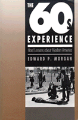

<body bgcolor="#FFFFFF" text="#000000" link="#0000FF" vlink="#CC0000" alink="#CC0000"><center><hr width="350" size="1" align="center" noshade>A compelling democratic vision that grounded Sixties movements and traces its evolution through concrete experiences<hr width="350" size="1" align="center" noshade><p><a href="https://cdcshoppingcart.uchicago.edu/Cart/ChicagoBook.aspx?ISBN=9780877228059&&PRESS=temple" target="_top">Buy this book!</a> | <a href="https://cdcshoppingcart.uchicago.edu/Cart/Cart.aspx?PRESS=temple" target="_top">View Cart</a> | <a href="https://cdcshoppingcart.uchicago.edu/Cart/Cart.aspx?PRESS=temple" target="_top">Check Out</a></p><p></p></center><!--none//--><h1>The Sixties Experience</h1>
<H2>Hard Lessons About Modern America</H2>
<h3>Edward P. Morgan, foreword by Howard P. Zinn</h3>
<P>cloth 0-87722-805-1 $49.95, Jun 91, <FONT COLOR=#990033>Out of Print</FONT>
<br>paper 1-56639-014-1 $35.95, Jul 92, <FONT COLOR=#990033>Available</FONT>
<BR> 357 pp
6x9
</P><BLOCKQUOTE><I>"A well-argued, leftist intellectual perspective of the era, informed by compassion and unafraid to articulate its vision.... </I>The Sixties Experience<I> [is] worthwhile and...compelling."</I>
<br>&#151<b><I>The Philadelphia Inquirer</I></b><I></I></BLOCKQUOTE>
<p>The 1960s have yet to be adequately explained. After a decade of "Sixties -bashing" and mass media romanticizing, after a host of "second wave" books reexamining portions of the 1960s, there is a need to integrate the experience of those years into a larger framework of understanding. <I>The Sixties Experience</I> is a coherent and uniquely comprehensive assessment of the meaning of that time for the contemporary world.
<p>"Sixties movements," observes Edward P. Morgan, "were grounded in a democratic vision that is as compelling today as it was then: a belief that all people should be included as full members of society, that individuals become empowered through meaningful social participation, and that politics ought to be grounded on respect and compassion for the individual person." He argues that the most fundamental lesson taught by movement experience was that, outside of significant liberal achievements (such as civil rights legislation), this democratic vision would not, and could not, be realized within the American system. This realization thus led to a radical reassessment of basic American institutions.
<p><I>The Sixties Experience</I> traces the evolution of this democratic vision and explores it through the concrete experiences of the civil rights and black power movements, the new student Left and the campus revolt, Vietnam and the antiwar movement, and the counterculture. Using first-person material, narrative accounts, and evocative excerpts from popular culture, he brings alive the vibrant energy and intense feelings generated by movement experiences He also traces the connection of the women’s and ecology movements to the Sixties experience, outlining their contribution, and that of a "revitalized Left," to the enduring legacies of the 1960s.
<p>In its vivid narratives and comprehensive, accessible explanations, <I>The Sixties Experience</I> addresses two main audiences: the generation that came of age during the 1960s and continues to reformulate the meaning of its experience, and young people curious about the tumult, the commitment, and the importance of the Sixties. More broadly, in its critical perspective, the book responds to those who scapegoat and dismiss that decade; in his critical assessment of the movements themselves, Morgan counters those who romanticize the 1960s.
<BR>&nbsp;<h2>Excerpt</h2><P>Excerpt available at <a href="http://www.temple.edu/tempress">www.temple.edu/tempress</a></p>
<BR>&nbsp;<h2>Reviews</h2>
<p><I>"An extraordinary achievement...[Morgan's] descriptions are rich and full. His analysis is provocative and judicious. He understands the contradictions within each movement, but refuses to let the polarities batter themselves into meaninglessness. He does us all a great service, by making the bold leap from that time to our own, extricating from that complex history a core of meaning for the future of our country."</I>
<br>&#151<b>Howard P. Zinn</b>, from the Foreword
<BR>&nbsp;<h2>Contents</h2><P>
<p>Foreword &#150 Howard Zinn
<br>Preface
<br>Chronology, 1960-1970
<p><b>Part I: Introduction</b>
<p>1. The Sixties Experience
<br><I>Explaining the Sixties: A Movement Perspective &#149
Hard Lessons</I>
Part II: Movements of the Sixties
<p>2. The Struggle for Racial Justice: The Sixties Catalyst
<br><I>The Beginnings, 1953-1960 &#149
Gaining Momentum, 1960-1961 &#149
The Growing Schism: Rights versus Power &#149
Black Power &#149
Legacies of the Civil Rights Struggle</I>
<p>3. Political Education: The New Student Left and the Campus Revolt
<br><I>The New Student Left &#149
The Campus Revolt</I>
<p>4. The Vietnam War: A Nation Divided, A Movement Radicalized
<br><I>The Antiwar Movement &#149
The Evolution of American Policy and Opposition to It &#149
Nixon's War and the End of the Sixties &#149
An Antiwar Legacy</I>
<p>5. Retreating Inward The Countercultural Revolution
<br><I>The Roots and Evolution of the Counterculture &#149
Hallmarks of the Counterculture &#149
The Counterculture as Transition</I>
<p><b>Part III: Since the Sixties: Lessons and Legacies</b>
<p>6. New Beginnings: Feminism, Ecology, and a Revived Left Critique
<br><I>The Women's Movement &#149
The Feminist Critique &#149
The Ecology Movement &#149
A Revived Left Critique</I>
<p>7. A New Awakening? Lessons and Legacies of the Sixties
<br><I>The "Right Turn" and Sixties-Bashing &#149
Toward a Third Path: A Global Pro-Democracy Movement &#149
The Sixties Democratic Vision Revisited</I>
<p>Notes
<br>Index
</P><BR>&nbsp;<H2>About the Author(s)</H2>
<P><b>Edward P. Morgan</b> is Professor of Government at Lehigh University.</P>
<BR><H2>Subject Categories</H2>
<p><A HREF="/tempress/political.html" TARGET="_top">Political Science and Public Policy</a>
<BR><A HREF="/tempress/american.html" TARGET="_top">American Studies</a>
</p>
<p align="center"><a href="https://cdcshoppingcart.uchicago.edu/Cart/ChicagoBook.aspx?ISBN=9780877228059&&PRESS=temple" target="_top">Buy this book!</a> | <a href="https://cdcshoppingcart.uchicago.edu/Cart/Cart.aspx?PRESS=temple" target="_top">View Cart</a> | <a href="https://cdcshoppingcart.uchicago.edu/Cart/Cart.aspx?PRESS=temple" target="_top">Check Out</a></p><p><font face="Arial" size="1"><a href="copyright.html" onMouseOver="window.status='Web Copyright Policy';return true;" onMouseOut="window.status=''" title="Web Copyright Policy">&copy;</a> 2015 <a href="http://www.temple.edu" target="new" onMouseOver="window.status='Link to Temple University home page';return true;" onMouseOut="window.status=''" title="Link to Temple University home page">Temple University</a>. All Rights Reserved. http://www.temple.edu/tempress/titles/734_reg.html</font></p>